jdk,jre,jvm的包含关系
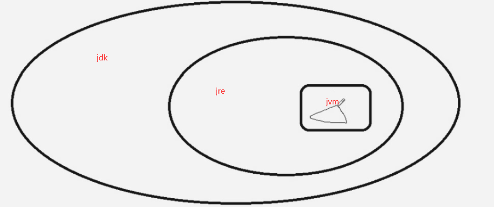
详情可以参照:
https://docs.oracle.com/javase/7/docs/
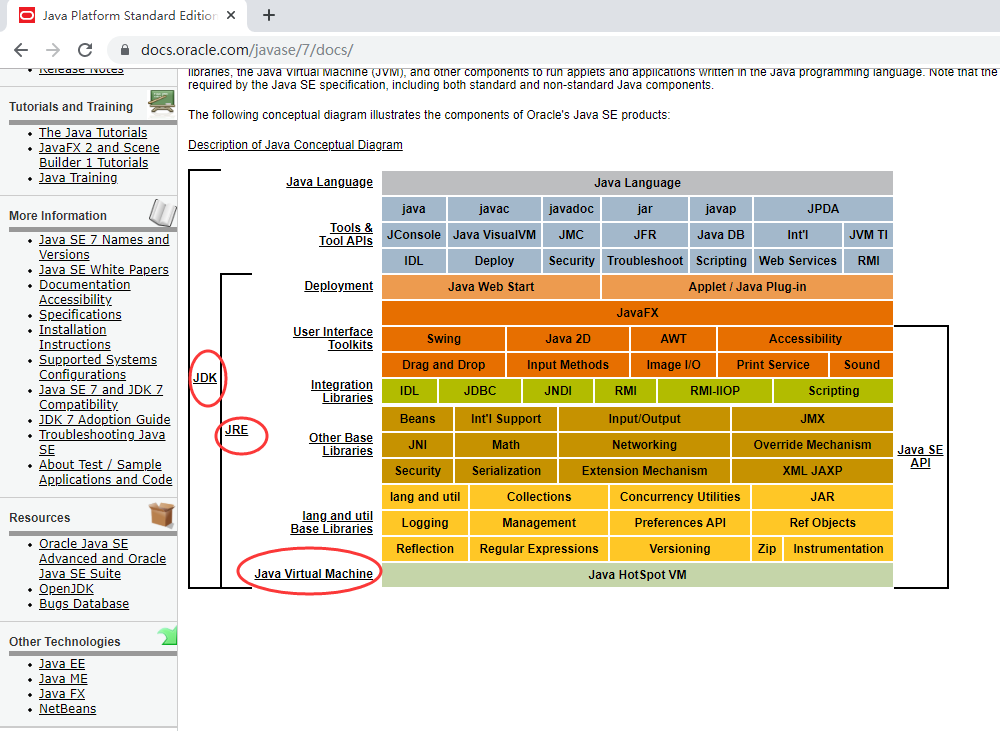
jvm初体验: 内存溢出场景模拟
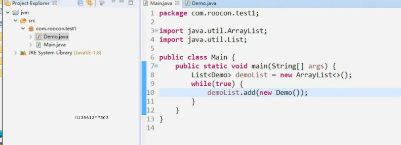
1 | import java.util.ArrayList; |
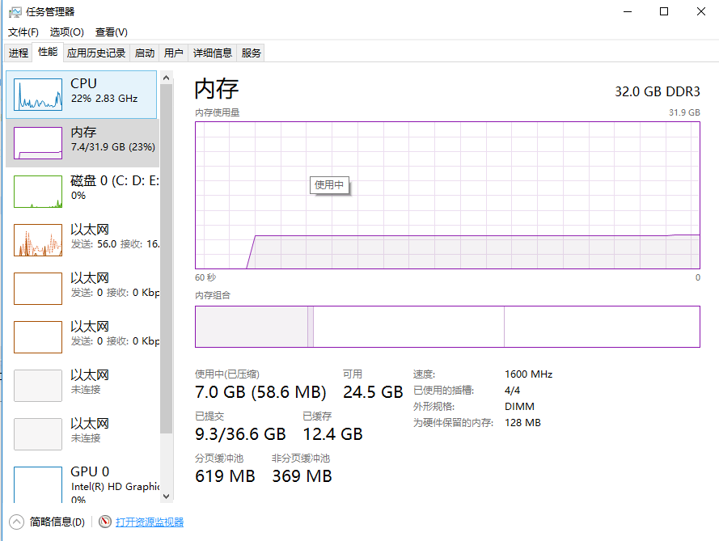
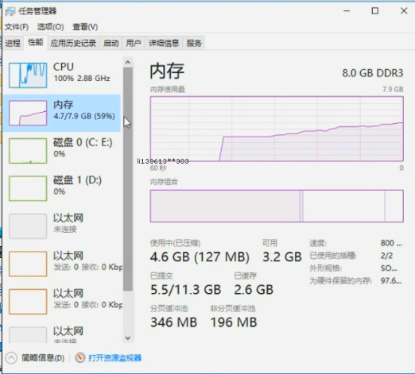
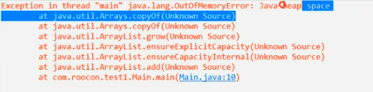
内存溢出检测：堆内存快照
RUN AS->RUN CONFIGURATION
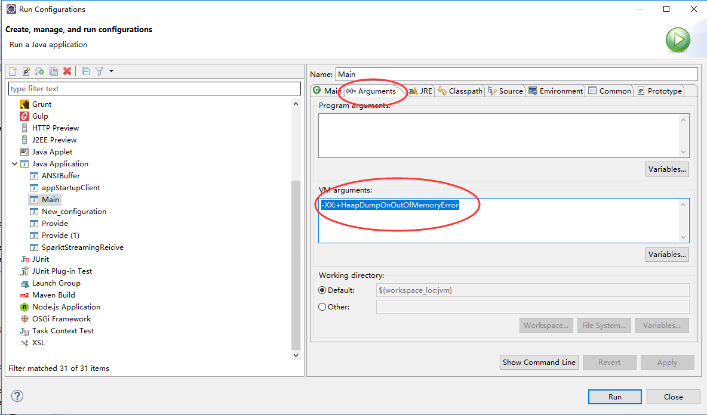
-XX:+HeapDumpOnOutOfMemoryError -Xms20m -Xmx20m
-Xms20m -Xmx20m 的意思是只分配给这个程序20mb的内存，这样程序就很快内存溢出了，只是为了方便模拟内存溢出这个场景，平时不能这么设置。
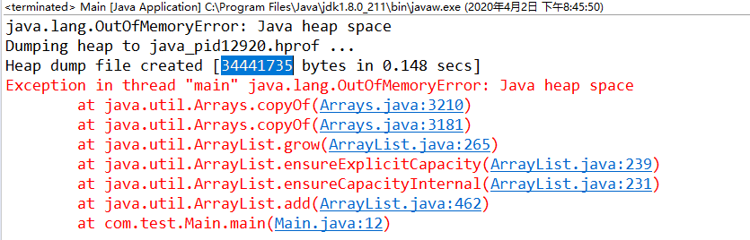
错误提示:
java.lang.OutOfMemoryError: Java heap space
Dumping heap to java_pid12920.hprof …
Heap dump file created [34441735 bytes in 0.148 secs]
Exception in thread “main” java.lang.OutOfMemoryError: Java heap space
at java.util.Arrays.copyOf(Arrays.java:3210)
at java.util.Arrays.copyOf(Arrays.java:3181)
at java.util.ArrayList.grow(ArrayList.java:265)
at java.util.ArrayList.ensureExplicitCapacity(ArrayList.java:239)
at java.util.ArrayList.ensureCapacityInternal(ArrayList.java:231)
at java.util.ArrayList.add(ArrayList.java:462)
at com.test.Main.main(Main.java:12)
在项目根目录找到报错的日志文件
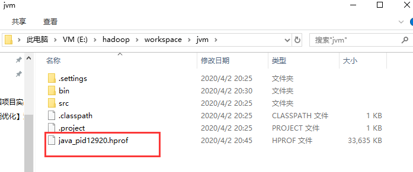
java_pid12920.hprof该文件需要下载一个内存分析插件来查看
比如： Memory Analyzer 1.7.0 release
在这里下载：http://www.eclipse.org/mat/downloads.php
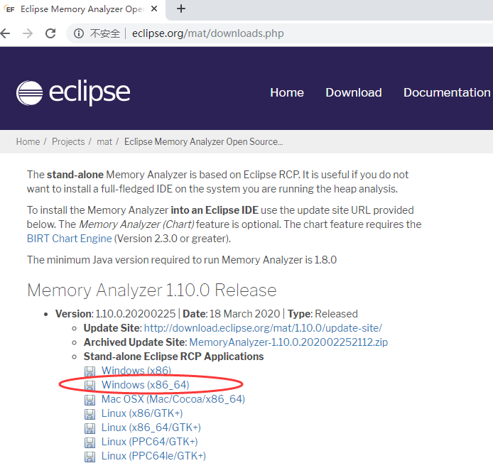
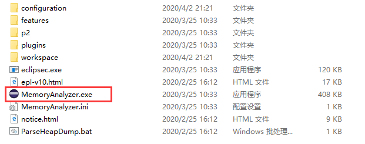
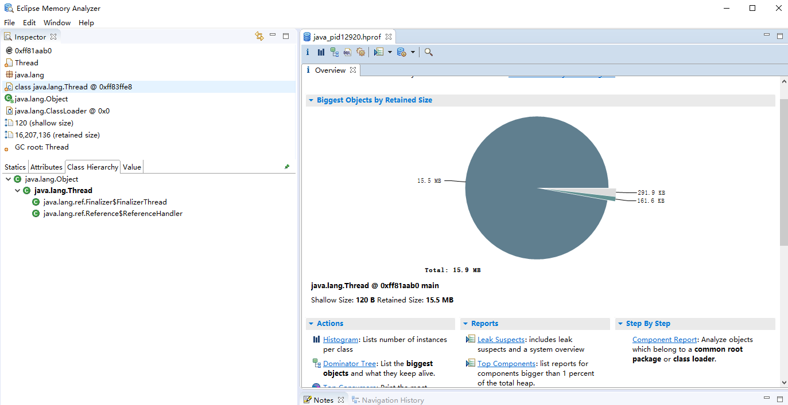
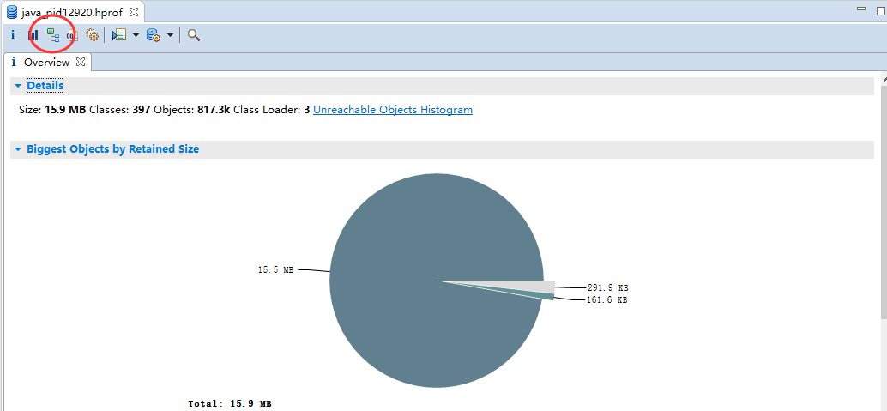
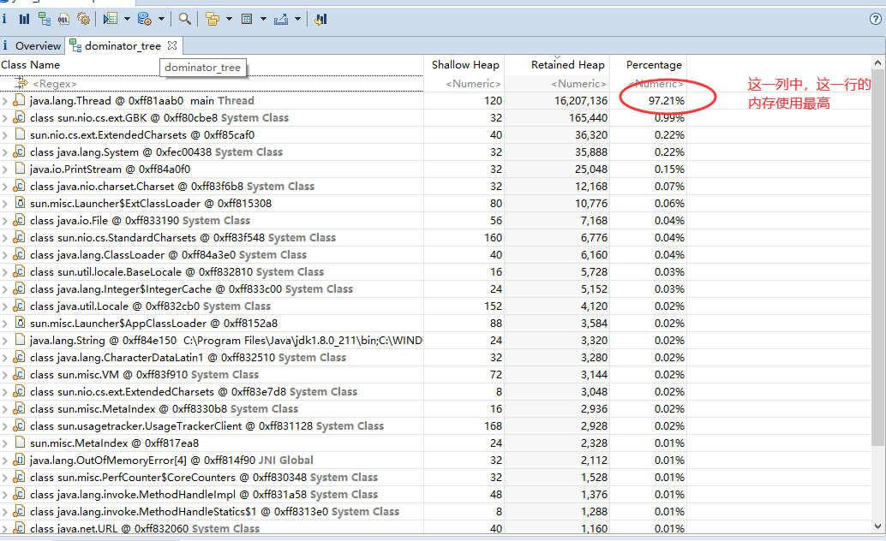
列明解释：
Shallow Heap: 对象本身占用的内存大小
Retained Heap: 当前直接或者间接引用对象的大小总和（这里是GC要回收的内存大小）
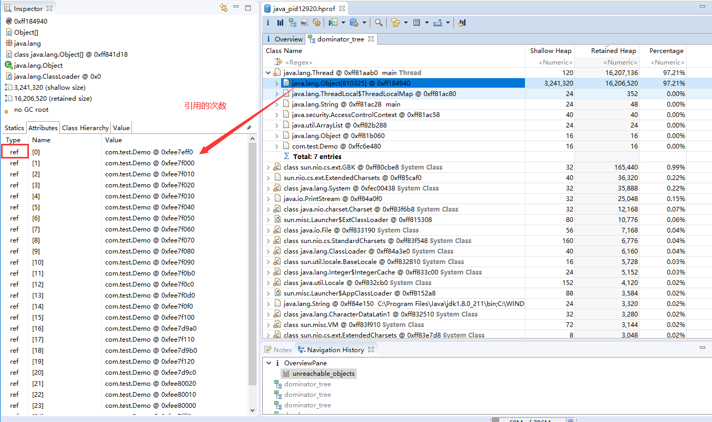
然后根据引用的对象定位到代码，找到解决方案